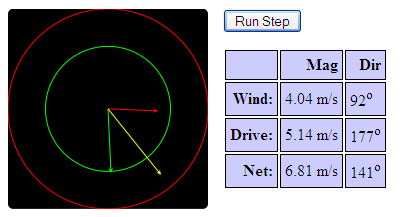

The goal is to pilot your startocruiser from launch at Fort Sumner, New Mexico, keeping it within the relatively unpopulated central western states for two or more weeks and then return to the starting point.
Before running an integration step, you may select your desired thrust vector by clicking and dragging on the thrust plot. The red vector is the current wind at the stratocruiser's location, the green vector is the thrust you are applying via the stratocruiser's propellers and the yellow vector is the current resultant direction vector obtained by adding the wind and thrust vectors together.
The green circle on the thrust graph represents 5 m/s, which is the thrust we think we will be able to sustain more or less continuously. The red circle represents 8 m/s, which requires considerably more power.
The history of your flight trajectories are saved on the server so that we can run various analyses. We will be adding features to this interface to allow you to review your past flights and see how your power usage compares to the solar power generated, among other things, so stay tuned.